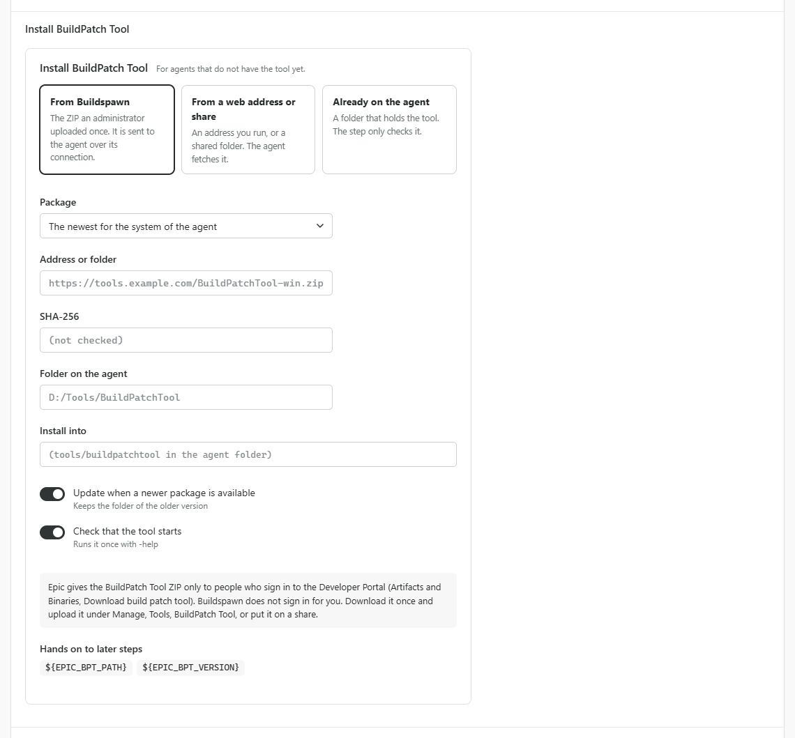

Install BuildPatch Tool
Put Epic's BuildPatch Tool on an agent, or check that it is there, so the Epic steps can run.
When to use it
Use it as the first step of a build that publishes to Epic, when you are not sure the agent has the BuildPatch Tool, or to keep the tool up to date. If you install the tool by hand on each agent, you do not need this step.
Epic gives the BuildPatch Tool ZIP only to people who sign in to the Developer Portal (Artifacts and Binaries, Download build patch tool). Buildspawn does not sign in for you. Download the ZIP once and upload it to Buildspawn, or put it on a web address or share you control.
How to set it up
- Open the build configuration, then Settings › Build steps › Add build step.
- Type
BuildPatchin Filter step types and click Install BuildPatch Tool. - Choose where the tool comes from (see the table below) and fill in the fields that appear.
- Leave Update when a newer package is available and Check that the tool starts ticked.
- Click Save.

Every field
Choose one of three cards under Install BuildPatch Tool.
| Field | What it does | Default | Example |
|---|---|---|---|
| From Buildspawn | Uses the ZIP an administrator uploaded once. Buildspawn sends it to the agent over its own connection. | Chosen | - |
| Package | Shown for From Buildspawn. Which uploaded package to use. The list holds the uploaded packages. | Empty (a package for the agent's system) | BuildPatchTool-win.zip |
| From a web address or share | The agent fetches the ZIP itself from an address you run, or from a shared folder. | Not chosen | - |
| Address or folder | The web address or share that holds the ZIP. | Empty | https://tools.studio.example/BuildPatchTool-win.zip |
| SHA-256 | The checksum of the ZIP. When it is set and the file does not match, the step fails. | Empty (not checked) | 9f2c4e7a... (the full 64 characters) |
| Already on the agent | A folder on the agent already holds the tool. The step only checks it. | Not chosen | - |
| Folder on the agent | That folder. | Empty | D:/Tools/BuildPatchTool |
| Install into | Where to unpack the tool, for the first two cards. | The BuildPatch Tool folder of the agent, else tools/buildpatchtool in the agent folder | D:/Tools/BuildPatchTool |
| Update when a newer package is available | Installs a newer package next to the old one. The folder of the older version is kept. | On | On |
| Check that the tool starts | Runs the tool once with -help to prove that it starts. | On | On |
A worked example
Your Windows agent win-build-02 is new. An administrator already uploaded BuildPatchTool-win.zip, version 1.8.8, under Manage › Tools › BuildPatch Tool. Add Install BuildPatch Tool as the first step of Epic Publish, keep From Buildspawn and leave the other fields alone. The first run installs the tool. Later runs only check that it is there.
What you see when it runs
- The ZIP is sent to the agent (or fetched by it) and checked.
- It is unpacked into a folder for the version.
- On Linux and macOS the program is made executable.
- The tool is started once with
-help, if you asked for that. - The agent reports the path and the version as
buildpatchtool.pathandbuildpatchtool.version.
The log lines start with Epic:. The step hands on ${EPIC_BPT_PATH} (the program) and ${EPIC_BPT_VERSION} (its version). The BuildPatch Tool page under Manage › Tools then shows the agent as installed.

Problems and fixes
| Message | What to do |
|---|---|
| The step names no package, or no package fits | Upload the ZIP under Manage › Tools › BuildPatch Tool, then choose it. |
| The package ... is for Windows, but agent ... runs Linux | Upload a package for the agent's system, and say which system it is when you upload. |
| The SHA-256 of the file does not match | The file changed or is damaged. Download it again and update the checksum. |
| The package has no BuildPatch Tool program | The ZIP is the wrong one. The program must be named BuildPatchTool.exe on Windows, or BuildPatchTool or BuildPatchTool.sh on Linux and macOS. |
| BuildPatch Tool was put on the agent but does not start | Run it by hand on the agent and read the error. A missing system library is the usual cause. |